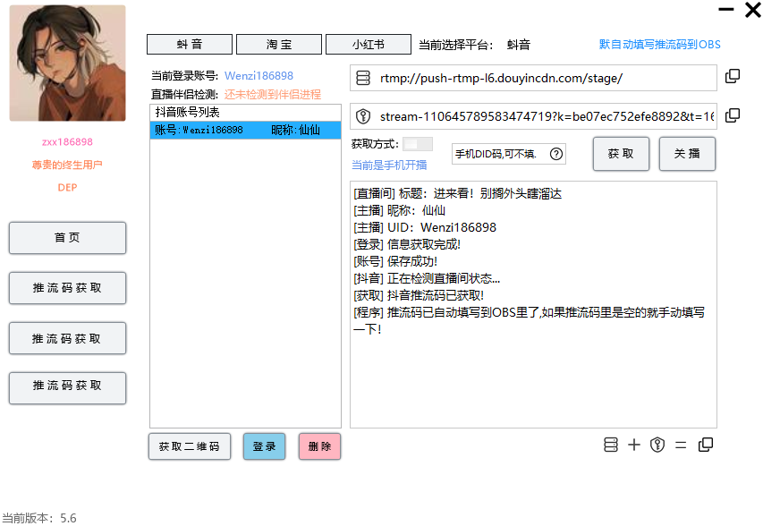
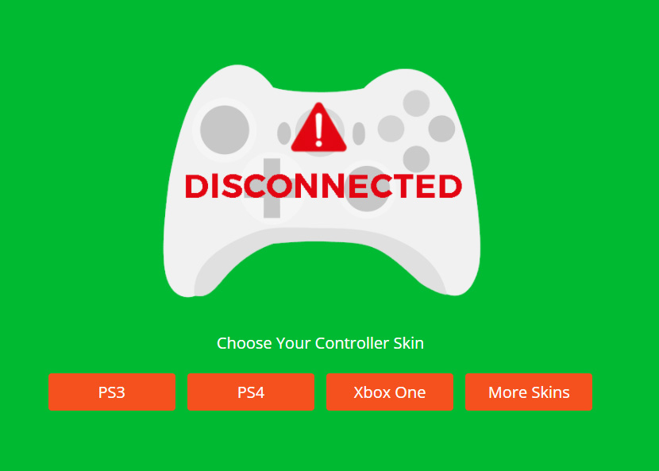

松鼠积分点播插件斗鱼积分点播系统B站打卡签到
多种模式支持：插播，飚鱼丸顶歌，重复点播限制，用户点播时间限制等。自定义文字模板，可自定义OBS 输出，视频黑名单，用户黑名单。签到，签到中奖。输出文本长度折叠，追加积分等...
立即查看 视频教程 
obs直播码采集助手
采集抖音，小红书平台助手的直播码，用于obs转播使用！弹幕朗读功能，视频解析无水印下载，直播源解析，用于转播，自动填写推流码到obs，支持抖音手机开播，伴侣开播获取串流地址
立即查看Azure免费文本转语音
使用跨 129 种语言和变体的 330 多种神经网络声音吸引全球受众。使用极具表现力和类似人类的声音实现文本阅读器和已启用声音的助手等方案。神经网络文本转语音支持多种语言样式，包括聊天、新闻广播、客户服务以及愉悦、同理心等情感。
立即使用OWN3D Pro 1.5.1
OWN3D Pro是OBS的免费插件，可让您免费尝试多达5个叠加层，并且只需每月/每年订阅少量，您就可以从900多个设计元素中进行选择，用于录制和流，叠加层，网络摄像头叠加层，警报等。...
obs27下载 obs28+下载Bongo cat Mver0.1.6键鼠指示器
多种模式支持：插播，飚鱼丸顶歌，重复点播限制，用户点播时间限制等。自定义文字模板，可自定义OBS 输出，视频黑名单，用户黑名单。签到，签到中奖。输出文本长度折叠，追加积分等...
立即下载
心率显示HypeRate: Heart Rate for OBS
将您的心率显示URL添加为浏览器源，将我们的小部件集成到使用OBS Studio，Streamlabs，Xsplit广播的任何实时流中......
立即下载 